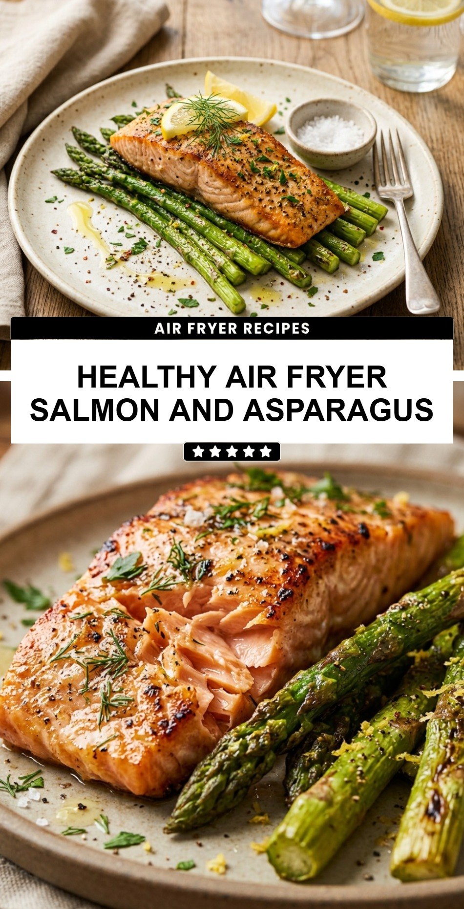

Healthy Air Fryer Salmon and Asparagus
October 19, 2026

Finding a meal that is both incredibly nutritious and lightning-fast to prepare can feel like a challenge. This Healthy Air Fryer Salmon and Asparagus recipe is the ultimate solution for busy weeknights when you want a gourmet-quality dinner without the fuss. By using the air fryer, you get perfectly flaky salmon and tender-crisp asparagus in under 15 minutes.
Recipe Information
Prep Time: 10 minutes
Cook Time: 12 minutes
Total Time: 22 minutes
Servings: 2
Difficulty Level: Easy
Nutrition Information
Calories per serving: 385
Protein: 34g
Carbohydrates: 6g
Fat: 25g
Fiber: 3g
Sugar: 2g
Sodium: 420mg